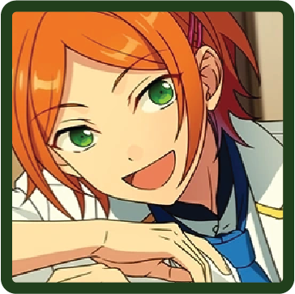
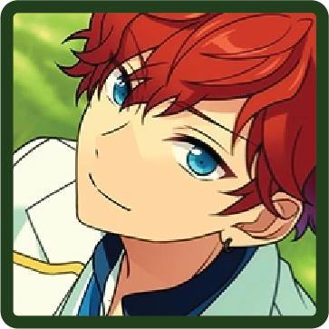
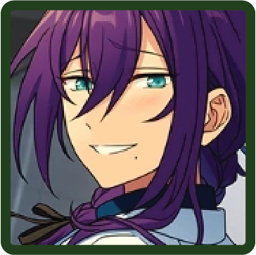
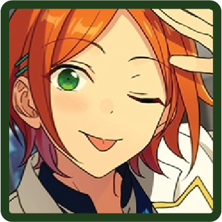

♪ ninja idol on a mission
Shinobu Sengoku
An idol who works hard to show off the beauty of ninjas. He may look childlike, but he actually watches over the people around him very well. While he may be shy at first, he has a bright personality, and easily grows attached to people he becomes acquainted with. His singing voice is innocent and energetic, and while he may be small, his performances include a variety of acrobatic feats.
He is RYUSEI Yellow in STARMAKER PRODUCTION's RYUSEITAI.
MORE INFORMATION
BIO
Birthday
Sep. 6th
Hobby
Reading
Specialty
Shamisen
Idol Color
#316745
Likes
Glasses
Dislikes
Soybeans
UNITS
RYUSEITAI
Chiaki Morisawa
Kanata Shinkai
Tetora Nagumo

Midori Takamine

Shinobu Sengoku
Puffy☆Bunny (Shuffle Unit)
This shuffle unit was formed for Easter. The group center is Wataru Hibiki, and Hinata Aoi is the leader.
Wataru Hibiki
Hinata Aoi
Mika Kagehira
Shinobu Sengoku
Hiiro Amagi
CLUBS (!-Era)
Broadcasting Committee
Nazuna Nito
Makoto Yuuki
Shinobu Sengoku
Broadcasting Committee (!!-Era)
Makoto Yuuki
Shinobu Sengoku
Ninja Association
Shinobu Sengoku
Ninja Association (!!-Era)
Shinobu Sengoku
Mayoi Ayase
The Student Council (!!-Era)
Mao Isara
Tori Himemiya
Yuzuru Fushimi
Shinobu Sengoku
CIRCLES (!!-Era)
OCEANS Biology Club
A circle organized by Kanata that focuses on interacting with sea creatures and thinking about the environment and biology. They periodically go to zoos and aquariums in search of a soothing atmosphere.
Kanata Shinkai
Izumi Sena
Souma Kanzaki
Kaoru Hakaze
Shinobu Sengoku
ASOBI Club
A circle that plays a wide variety of games in order to stay fit and relieve stress. Both the game being played and the members of each team are decided by lottery, and the rules are pretty lax.
Rinne Amagi
Shinobu Sengoku
Jun Sazanami
Sora Harukawa
Yuta Aoi
RELEVANT STORIES
Flower Festival

SCOUT STORIES
Fresh Green Martial Artist